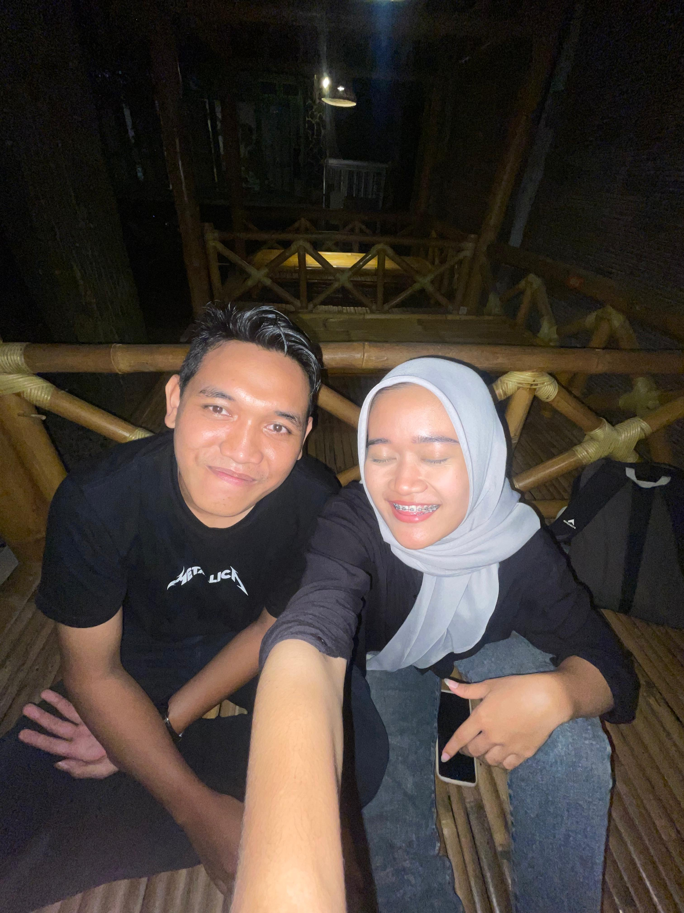
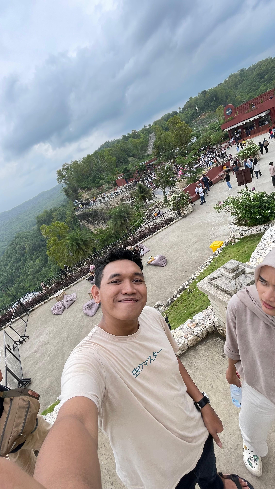
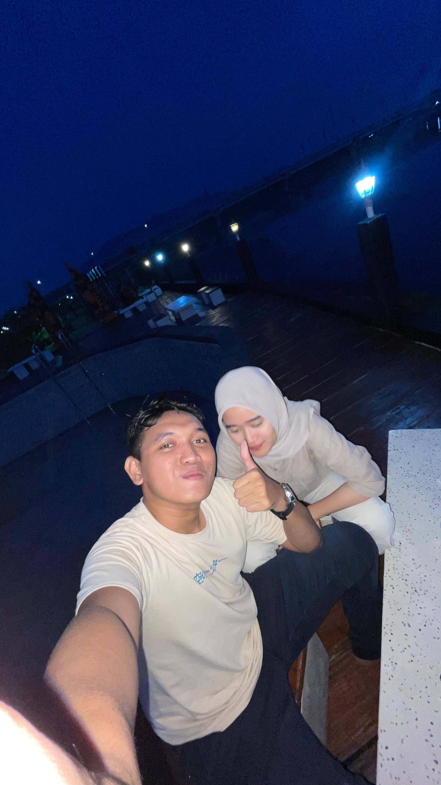
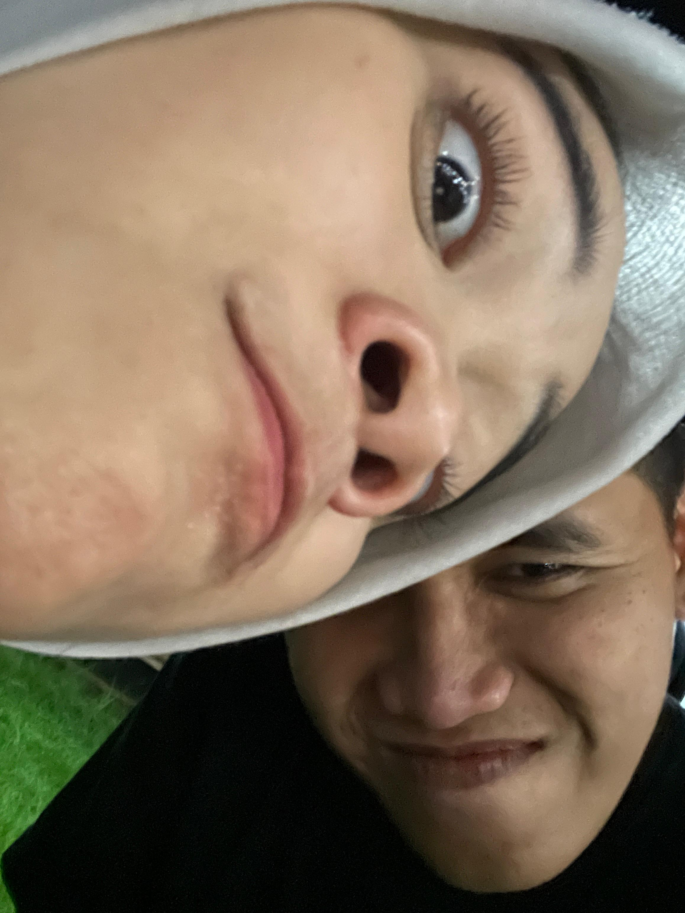
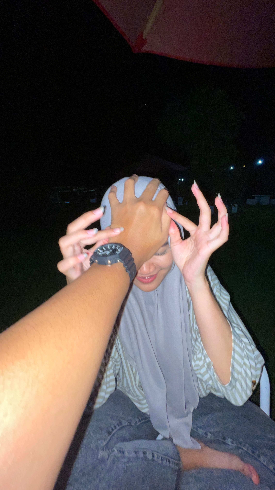
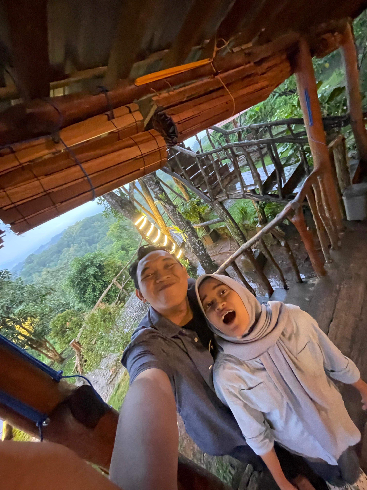

16 April
Selamat ulang tahun, Connie
Hari ini adalah momen yang sangat spesial, bukan hanya karena bertambahnya usiamu, tetapi juga sebagai pengingat betapa berharganya kamu di mata banyak orang. Di hari yang indah ini, aku ingin mengucapkan banyak hal untukmu. Tapi yang paling utama, terima kasih karena telah menjadi kamu yang apa adanya, ceria, tulus, hangat, dan penuh semangat.
Semoga setiap detik di umurmu yang baru ini dipenuhi oleh hal-hal yang membahagiakan. Semoga apa pun yang kamu impikan selama ini satu per satu menjadi kenyataan. Jangan takut bermimpi besar, karena kamu punya kekuatan untuk meraihnya.
Di tengah hiruk-pikuk kehidupan, semoga kamu selalu menemukan ketenangan. Di saat hujan turun di hati, semoga kamu tetap menemukan pelangi. Dan saat kamu merasa sendiri, semoga kamu selalu ingat bahwa ada orang-orang yang mencintai dan mendukungmu, tanpa henti.
Hari ini, biarkan dunia tahu bahwa kamu pantas dirayakan. Tersenyumlah lebih lebar, tertawalah lebih lepas, dan cintailah dirimu lebih dalam.
Selamat ulang tahun, Connie Semoga tahun ini menjadi babak baru yang lebih luar biasa dari sebelumnya dan jangan lupa kerjakan skripsimu hehe. Teruslah menjadi cahaya untuk dirimu dan orang di sekitarmu. 💙✨
Love buat connie dari parul ❤️❤️





